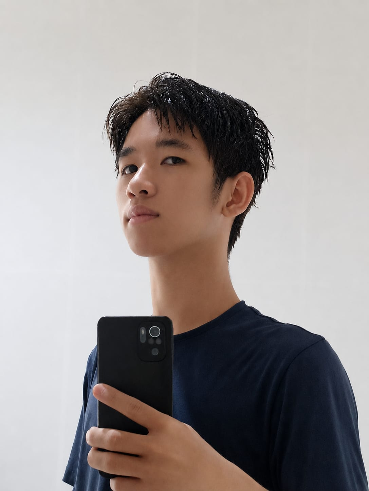

Hanif Imam Muttaqin
Graphic Designer & Digital Illustrator
Membantu brand dan studio mewujudkan visi visual bernilai tinggi melalui desain grafis modern, karakter ilustrasi presisi, serta konten motion graphics yang memikat audiens.

Tentang Saya & Metodologi
Mewujudkan Konsep Menjadi Karya Visual Bergaya Modern
Saya adalah Hanif Imam Muttaqin, seorang desainer yang berfokus pada Graphic Design dan Digital Illustration. Saya memiliki ketertarikan dalam menciptakan karya visual yang kreatif dan menarik, mulai dari ilustrasi anime, desain grafis, hingga konten visual. Dalam proses berkarya, saya menggunakan Clip Studio Paint, Adobe Photoshop, dan Adobe After Effects untuk menghasilkan karya sesuai dengan konsep dan kebutuhan setiap proyek.
4 Langkah Alur Kerja
Dari brief hingga final delivery
Memahami kebutuhan proyek, konsep, referensi, dan menentukan arah visual yang sesuai.
Mengembangkan sketsa awal, komposisi, pose, serta konsep visual sebelum masuk ke tahap produksi.
Mengembangkan karya melalui lineart, coloring, shading, lighting, hingga tahap finishing.
Finalisasi karya dan penyerahan file dalam format serta resolusi yang sesuai kebutuhan proyek.
Tools & Capabilities
Primary ToolsSoftware yang digunakan dalam proses kreatif dan produksi visual.
P
Clip Studio Paint
Digital Illustration & Character Art
Ps
Adobe Photoshop
Editing, Compositing & Visual Finishing
Ae
Adobe After Effects
Motion Graphics & Animation
Core Capabilities
Karya Ilustrasi
Proyek Ilustrasi (Geser atau Klik Gambar Untuk Detail)Karya Animasi
Chibi Dance
Uchiha Sasuke
Speed Paint
Lihat Proses Secara Langsung
Cuplikan animasi proses pengerjaan ilustrasi, dari sketsa kasar hingga hasil akhir yang siap diserahkan ke klien.
Layanan
Perkiraan Waktu & Estimasi Pengerjaan
Pilih paket yang paling sesuai dengan kebutuhan dan tingkat detail proyek kamu.
Tertarik dengan Karya Saya?
Lihat karya lainnya atau hubungi saya untuk membahas proyek.